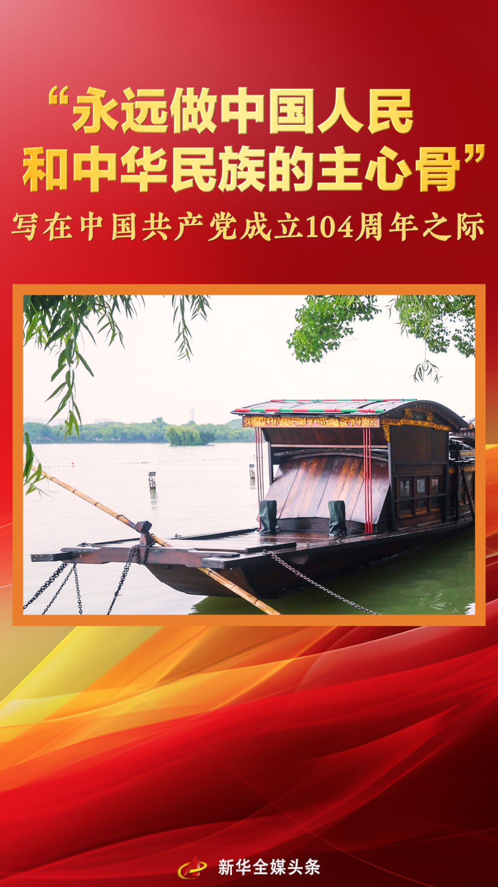

新华社2025-06-30 09:15:35
“我们是一个大党，领导的是一个大国，进行的是伟大的事业。
成立104年，执政75年，中国共产党带领人民矢志不渝、笃行不怠，创造了彪炳史册的辉煌业绩，书写了气壮山河的恢宏史诗。
党的十八大以来，以习近平同志为核心的党中央以伟大的历史主动精神、巨大的政治勇气、强烈的责任担当，推动党和国家事业取得历史性成就、发生历史性变革，中华民族伟大复兴进入不可逆转的历史进程。
沧海横流，砥柱巍然。
向着第二个百年奋斗目标，向着强国建设、民族复兴的光明前景，一个拥有9900多万名党员、510多万个基层党组织的世界最大马克思主义执政党，强有力地领导着一个拥有14亿多人口的东方大国，意气风发、昂首阔步向前进。
“没有中国共产党，就没有新中国，就没有中华民族伟大复兴”
“没有中国共产党，就没有新中国，就没有中华民族伟大复兴”
2025年初夏时节，习近平总书记赴河南考察，走进洛阳轴承集团股份有限公司。
展台上，有以毫米计的精细件，也有应用于风力发电机的大块头；生产线上，智能机械臂正精细作业，各项参数实时显示。
忆起“过去的洋火、洋皂、洋铁等靠买进来”，进而谈到“今天我们成为工业门类最齐全的世界制造业第一大国”，习近平总书记抚今追昔，感慨地说：“这条路走对了。”
办好中国的事情，关键在党。这条自力更生、开拓创新之路，正是中国共产党带领人民坚定不移走出的康庄大道。